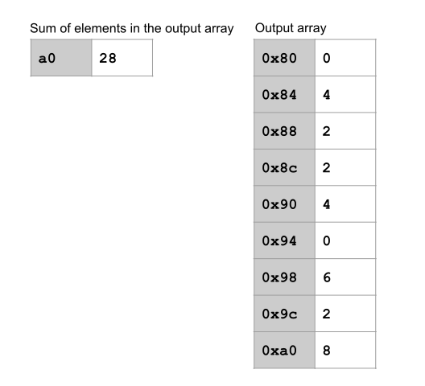
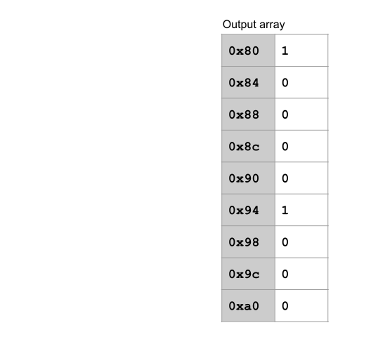

Part A: Math Functions
In this part, you will implement a few math operations that will be used for classification later.
Task 1: Absolute Value (Walkthrough)
To familiarize you with the workflow of this project, we will walk you through this task.
Running Tests
In this project, tests are written in Python and compiled into RISC-V assembly.
The Python source for the provided tests is located in unittests.py. Look over the contents of unittests.py. Although the tests are written for you in Tasks 1-4, it helps to be familiar with the unit testing framework to understand what the tests are doing.
To run the tests, on your local machine, start by running bash test.sh in the 61c-proj2 directory on your local machine. This gives you an overview of the commands you can run for testing. In particular, bash test.sh part_a compiles and runs all the tests for Part A. You can also provide the name of a specific function to compile and run all the tests for that particular function.
For this task, since we are implementing the abs function, on your local machine, run bash test.sh test_abs. This creates a test-src folder containing the Python tests compiled into RISC-V.
Since we haven't implemented the abs function yet, some of the tests are failing. Let's try implementing abs.
You can edit files in a text editor or directly in Venus. To edit files in Venus, switch to the Files tab. Here you can open and edit assembly files. Remember to save your files frequently with control+S (Windows) or command+S (Mac). Venus does not auto-save as you work.
Open src/abs.s (either in a text editor or Venus) and copy-paste the implementation below.
abs:
blt a0, zero, done
# Negate a0
sub a0, x0, a0
done:
ret
Again on your local machine, run bash test.sh test_abs. The tests don't pass, so something is probably wrong with our implementation.
Using VDB to debug tests via Venus
First, open up Venus in your web browser and mount your files. (Refer back to the setup section of the spec if you're having trouble.)
Let's start by setting a breakpoint. Type ebreak at the start of the abs function. This places a breakpoint just before the blt a0, zero, done instruction.
To start the debugger, in the Venus terminal, run cd /vmfs/test-src and run ls. This should list all the test files you can run. Run vdb test_abs_one.s to start the debugger for an absolute value test.
In the Venus simulator tab, Click Run to start running the program. The debugger will pause at the breakpoint we set. While paused, you can inspect the registers and memory. In particular, notice that register a0 contains the argument 1 here, because this test calls your function with argument a0 = 1.
You can also step through code line-by-line in the debugger. Click Step to execute the next instruction, blt a0, zero, done. Step through the function and inspect the registers. See if you can spot the bug in our implementation.
Click to reveal answer
In the first line, we're skipping the negation and branching to done if the number is less than 0. However, we actually want to skip the negation if the number is greater than and equal to 0, and perform the negation if the number is less than 0.
One way to fix this is to branch to done if the argument is greater than or equal to 0. Other ways to fix this are possible!
Change the implementation in src/abs.s to fix the bug. Run bash test.sh test_abs again, and make sure that all the provided tests pass.
Task 2: ReLU
Conceptual Overview: Arrays
In this project, we will be working with integer arrays. Remember that the integers in an integer array are stored in a consecutive block of memory.
To pass an integer array as an argument, we will pass a pointer to the start of the integer array, and the number of elements in the array.

In this diagram, register a0 stores the first argument (the address of the start of the array). Register a1 stores the second argument (the number of integers in the array).
Conceptual Overview: ReLU
The ReLU function takes in an integer array and sets every negative value in the array to 0. Positive values in the array are unchanged. In other words, for each element x in the array, ReLU computes max(x, 0).
ReLU should modify the array in place. For example, if the above integer array is passed into ReLU, the result would be stored in the same place in memory:
Note that the negative values in the array were set to 0 in memory.
Your Task
Fill in the relu function in src/relu.s.
relu: Task 2. |
|||
| Arguments | a0 |
int * |
A pointer to the start of the integer array. |
a1 |
int |
The number of integers in the array. You can assume that this argument matches the actual length of the integer array. | |
| Return values | None | ||
If the input is malformed in the following ways, put the appropriate return code into a0 and run j exit to quit the program. (For example, if the length of the array is less than 1, run li a0 36 and j exit.)
| Return code | Exception |
| 36 | The length of the array is less than 1. |
Testing and debugging
To test your function, in your local terminal, run bash test.sh test_relu.
To debug your function, in your Venus terminal, run cd /vmfs/test-src, then run a VDB command to start the debugger:
vdb test_relu_standard.s
vdb test_relu_length_1.s
vdb test_relu_invalid_n.s
Here are some debugging tips that should apply to the entire project:
- If you see the error "You are attempting to edit the text of the program though the program is set to immutable at address 0x00000000!", this means that you are trying to write to memory address 0x00000000 (or whatever memory address you see in the error). This is probably happening because you're giving this address to a store instruction, which then tries to write to this address.
- If you see the error "label exit used but not defined" when starting the debugger, make sure that you're starting the debugger with the
vdbcommands above. Clicking "assemble and simulate from editor" will not work. - Unfortunately the local tests don't check for out-of-bounds memory accesses. If you ever encounter a failing test on the autograder, try making sure that your code never writes to memory outside of an array.
If your ReLU works locally but not on Gradescope, here are some edge cases we've seen that the local cases don't check. You can modify unittests.py to write your own tests for these cases!
- The local tests don't perform ReLU on larger numbers.
Task 3: Argmax
Conceptual Overview: Argmax
The argmax function takes in an integer array and returns the index of the largest element in the array. If multiple elements are tied as the largest element, return the smallest index.
For example, if the integer array [-6, -1, 6, 1] is passed into the argmax function, the output should be 2, because the largest integer (6) is located at index 2 in the array. If the integer array were instead [6, 1, 6, 1], then the output should be 0, because the largest integer (6) is first found at index 0.
Your Task
Fill in the argmax function in src/argmax.s.
argmax: Task 3. |
|||
| Arguments | a0 |
int * |
A pointer to the start of the integer array. |
a1 |
int |
The number of integers in the array. You can assume that this argument matches the actual length of the integer array. | |
| Return values | a0 |
int |
The index of the largest element. If the largest element appears multiple times, return the smallest index. |
If the input is malformed in the following ways, put the appropriate return code into a0 and run j exit to quit the program.
| Return code | Exception |
| 36 | The length of the array is less than 1. |
Testing and debugging
To test your function, in your local terminal, run bash test.sh test_argmax.
To debug your function, in your Venus terminal, run cd /vmfs/test-src, then run a VDB command to start the debugger:
vdb test_argmax_invalid_n.s
vdb test_argmax_length_1.s
vdb test_argmax_standard.s
If your ReLU works locally but not on Gradescope, here are some edge cases we've seen that the local cases don't check. You can modify unittests.py to write your own tests for these cases!
- The local tests don't check that your code works if the largest element in the array is the last element of the array.
- The local tests don't check that your code works if the largest element appears more than once.
Task 4: Dot Product
Conceptual Overview: Dot Product
The dot product function takes in two integer arrays, multiplies the corresponding entries of the arrays together, and returns the sum of all the products.
For example, if these two integer arrays were passed into the dot product function, the function would return (1*6) + (2*1) + (3*6) + (4*1) + (5*6) + (6*1) + (7*6) + (8*1) + (9*6) = 170.
Conceptual Overview: Array Strides
Instead of iterating through every element of the array, what if we want to iterate through every other element, or every third element? To do this, we will define the stride of an array.
To iterate through an array with stride n, start at the beginning of the array and only consider every nth element, skipping the elements in between.
Note that the stride is given in number of elements, not number of bytes. This means that iterating with stride 1 is equivalent to iterating through every element of the array.

For example, in the above diagram, both arrays are using stride 2, so we skip every other element in the array. 5 elements should be considered, so we stop after multiplying 5 pairs of elements together. The function would return (1*6) + (3*6) + (5*6) + (7*6) + (9*6) = 150.

In the above diagram, the first array is using stride 2, so we skip every other element in this array. The second array is using stride 3, so we use every third element in this array. 3 elements should be considered, so we stop after multiplying 3 pairs of elements together. The function would return (1*6) + (3*1) + (5*6) = 39.
Your Task
Fill in the dot function in src/dot.s.
The dot function may assume that the a2 argument for the number of elements to use in the calculation will not cause an out-of-bounds array access. However, you will need to enforce this when calling dot from other functions later in this project.
dot: Task 4. |
|||
| Arguments | a0 |
int * |
A pointer to the start of the first array. |
a1 |
int * |
A pointer to the start of the second array. | |
a2 |
int |
The number of elements to use in the calculation. | |
a3 |
int |
The stride of the first array. | |
a4 |
int |
The stride of the second array. | |
| Return values | a0 |
int |
The dot product of the two arrays, using the given number of elements and the given strides. |
If the input is malformed in the following ways, put the appropriate return code into a0 and run j exit to quit the program.
| Return code | Exception |
| 36 | The length of either array is less than 1. |
| 37 | The stride of either array is less than 1. |
Testing and debugging
To test your function, in your local terminal, run bash test.sh test_dot.
To debug your function, in your Venus terminal, run cd /vmfs/test-src, then run a VDB command to start the debugger:
vdb test_dot_length_1.s
vdb test_dot_length_error.s
vdb test_dot_length_error2.s
vdb test_dot_standard.s
vdb test_dot_stride.s
vdb test_dot_stride_error1.s
vdb test_dot_stride_error2.s
Task 5: Matrix Multiplication
Conceptual Overview: Storing Matrices
A matrix is a 2-dimensional array of integers. In this project, matrices will be stored as an integer array in row-major order. Row-major order means we each row of the matrix consecutively in memory as a 1-dimensional integer array.

Conceptual Overview: Matrix Multiplication
The matrix multiplication function takes in two integer matrices A (dimension n × m) and B (dimension m × k) and outputs an integer matrix C (dimension n × k).
To calculate the entry at row i, column j of C, take the dot product of the ith row of A and the jth column of B. Note that this can be done by calling the dot function with the proper strides.
For example, in the above diagram, we are computing the entry in row 1, column 1 of C by taking the dot product of the 1st row of A and the 1st row of B.

In the above diagram, we are computing the entry in row 2, column 2 of C. Note that we are changing the pointer to the start of the array in order to access later rows and columns.
Your Task
Fill in the matmul function in src/matmul.s.
matmul: Task 5. |
|||
| Arguments | a0 |
int * |
A pointer to the start of the first matrix A (stored as an integer array in row-major order). |
a1 |
int |
The number of rows (height) of the first matrix A. | |
a2 |
int |
The number of columns (width) of the first matrix A. | |
a3 |
int * |
A pointer to the start of the second matrix B (stored as an integer array in row-major order). | |
a4 |
int |
The number of rows (height) of the second matrix B. | |
a5 |
int |
The number of columns (width) of the second matrix B. | |
a6 |
int * |
A pointer to the start of an integer array where the result C should be stored. You can assume this memory has been allocated (but is uninitialized) and has enough space to store C. | |
| Return values | None | ||
If the input is malformed in the following ways, put the appropriate return code into a0 and run j exit to quit the program.
| Return code | Exception |
| 38 | The height or width of either matrix is less than 1. |
| 38 | The number of columns (width) of the first matrix A is not equal to the number of rows (height) of the second matrix B. |
Testing and debugging
To test your function, in your local terminal, run bash test.sh test_matmul.
To debug your function, in your Venus terminal, run cd /vmfs/test-src, then run a VDB command to start the debugger:
vdb test_matmul_length_1.s
vdb test_matmul_negative_dim_m0_x.s
vdb test_matmul_negative_dim_m0_y.s
vdb test_matmul_negative_dim_m1_x.s
vdb test_matmul_negative_dim_m1_y.s
vdb test_matmul_nonsquare_1.s
vdb test_matmul_nonsquare_2.s
vdb test_matmul_square.s
vdb test_matmul_unmatched_dims.s
vdb test_matmul_zero_dim_m0.s
vdb test_matmul_zero_dim_m1.s
Debugging advice:
- Since you'll need to call the
dotfunction inmatmul, make sure to follow calling convention! See the calling convention appendix for more details. In particular, as soon as you calldot, thedotfunction is allowed to change all the t0-t6 and a1-a7 registers, so when thedotfunction returns, you need to assume that those registers contain garbage.
Task 6: Testing
In this task, you will be writing tests for some mathematical functions that have already been implemented for you.
We updated the starter code for this task after the project was released (on Monday, February 14), so run git pull starter main to ensure you have those updates before starting this task.
Conceptual Overview: Loss Functions
A loss function takes in two integer arrays and outputs an integer array containing some measure of how different each pair of corresponding entries are. Some loss functions also output the sum of all the difference measurements. This project uses three different loss functions.
The absolute loss function computes and outputs the absolute difference between each pair of corresponding entries, and then outputs the sum of all the absolute differences.

The squared loss function computes and outputs the square of the difference between each pair of corresponding entries, and then outputs the sum of all the squared differences.

The zero-one loss function computes whether each pair of corresponding entries is equal, and does not output any sum.

These loss functions use a helper function initialize-zero. It takes in the length of the array as input and outputs a newly-allocated array of the given length, filled with zeros.
Your Task
Fill in the tests for the three loss functions and the initialize-zero helper function in studenttests.py.
We recommend looking through unittests.py to understand how the Python framework for writing tests works.
To ensure that your tests are run by the unit testing framework, make sure that your function names start with test_! For example, the function def test_length_0(self) will run, but the function def length_0(self) will not run.
| Loss functions: Task 6. | |||
| Arguments | a0 |
int * |
A pointer to the start of the first input array. |
a1 |
int * |
A pointer to the start of the second input array. | |
a2 |
int |
The number of integers in the array. | |
a3 |
int * |
A pointer to the start of the output array, where the results will be stored. | |
| Return values | a0 |
int |
The sum of the elements in the output array. (No return value for zero-one loss.) |
initialize_zero: Task 6. |
|||
| Arguments | a0 |
int |
The size of the array to be created. |
| Return values | a0 |
int * |
A pointer to the newly-allocated array of zeros. |
The functions will return the following error codes if the input is malformed:
| Return code | Exception |
| 36 | The length of the array is less than 1. |
| 26 | malloc returns an error. |
To test your code coverage, run bash test.sh coverage. To get full credit on this part, make sure that your tests achieve 100% coverage. (In other words, your tests must cause every line of the implementation to be executed.)
Submission and Grading
Submit your code to the Project 2A assignment on Gradescope.
To ensure the autograder runs correctly, do not add any .import statements to the starter code. Also, make sure there are no ecall instructions in your code.